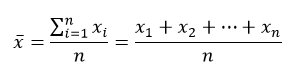
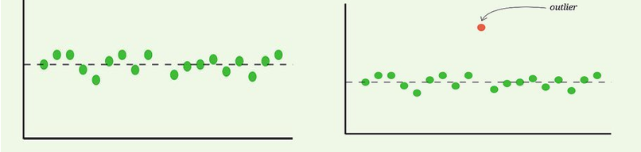
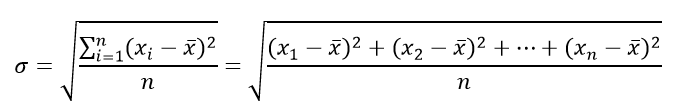
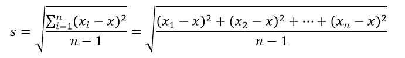
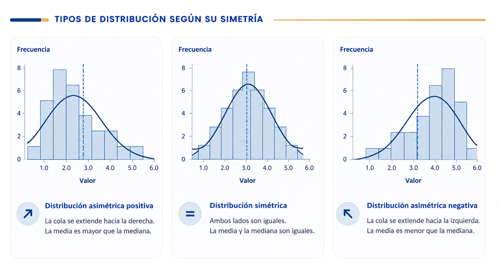

Universidad de Guanajuato
La media aritmética o promedio (x̄) es la medida de tendencia central más utilizada. Se calcula sumando todos los valores (xᵢ) de un conjunto de datos y dividiendo ese resultado entre el número total de elementos (n). Proporciona un "centro de gravedad" de la distribución, aunque es sensible a valores extremos.

Tipos:
Sensibilidad: Los valores atípicos (muy altos o muy bajos) afectan significativamente el resultado. Esto hace que el valor de la media no sea un valor que equilibre a la mayoría de los datos.

Figura 1. Representación de la media aritmética. a)Sin valores atípicos, b)Con valores atípicos
Propiedad fundamental: La suma de las desviaciones de los datos respecto a la media es igual a cero:
La desviación estándar o desviación típica(σ) es una medida de dispersión más común e indica cuánto se dispersan los datos alrededor de la media. Esta se calcula como la raíz cuadrada del promedio de los cuadrados de las desviaciones de los valores de un conjunto de datos (xᵢ) con respecto al valor de su media aritmética (x̄).

Significado: Un valor alto indica datos muy dispersos; un valor bajo indica datos concentrados cerca de la media.
Tipos:

Regla empírica (distribución normal): Si los datos agrupados forman una distribución simétrica unimodal, al menos el 60% (específicamente, a menudo alrededor del 68% o más, dependiendo de la forma de la "campana") de los datos están contenidos en el intervalo [x̄-σ, x̄+σ]. Si la distribución es poco asimétrica esta regla se puede cumplir.

Figura 2. Tipos de simetría en una distribución unimodal.